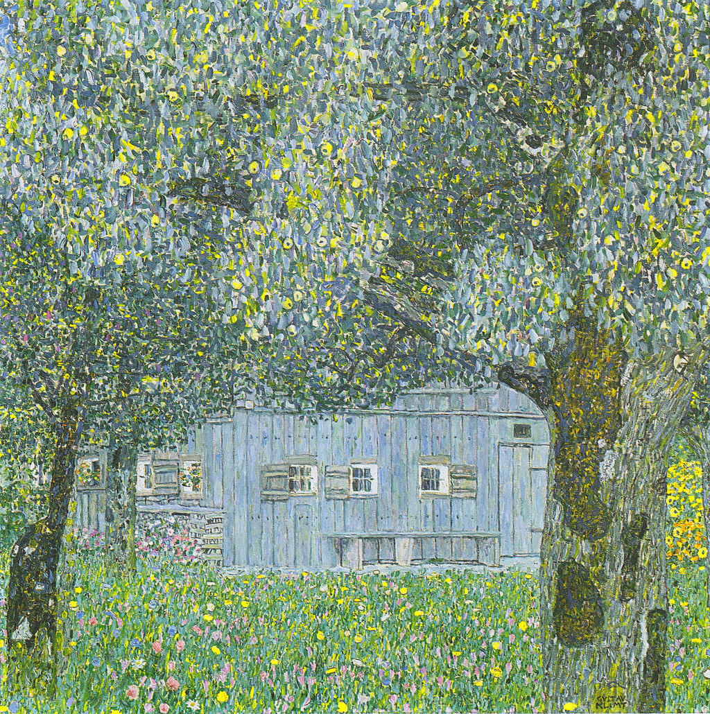

<head>
<meta charset="UTF-8" />
<meta name="keywords" content="drawing, painting" />
<meta name="description" content="drawings by Sunjy" />
<title>Sunjy</title>
<link rel="shortcut icon" type="image/x-icon" href="../../mImages/mCommon/favicon.ico" media="screen" />
<link rel="stylesheet" type="text/css" href="../../mCsses/mCommon/mCssA.css" />
<link rel="stylesheet" type="text/css" href="../../mCsses/mCommon/mCssB.css" />
<link rel="stylesheet" type="text/css" href="../../mCsses/mCommon/mCssC.css" />
<link rel="stylesheet" type="text/css" href="../../mCsses/mCommon/mCssD.css" />
<link rel="stylesheet" type="text/css" href="../../mCsses/mContent/mCssA.css" />
<link rel="stylesheet" type="text/css" href="../../mCsses/mContent/mCssB.css" />
<link rel="stylesheet" type="text/css" href="../../mCsses/mContent/mCssC.css" />
<link rel="stylesheet" type="text/css" href="../../mCsses/mContent/mCssD.css" />
</head>
<script type="text/javascript" src="../../mScripts/mContent/mContentAA.js" /></script>
<script type="text/javascript" src="../../mScripts/mContent/mContentAB.js" /></script>
<script type="text/javascript" src="../../mScripts/mContent/mContentAC.js" /></script>
<script type="text/javascript" src="../../mScripts/mContent/mContentAD.js" /></script>
<script type="text/javascript"></script> 
<script type="text/javascript">
document.write('<div class="mImgAbsolute"></div>');
/*
document.write('<p class="mFontSizeBColor" />From a white paper...</p>');
document.write('<table class="center"><tr><td>');
document.write('');
document.write('</td></tr></table>');
*/
</script>


<script type="text/javascript">
document.write('<p class="mFontSizeBColor" />Oberösterreichisches Bauernhaus</p>');
document.write('<p class="mFontSizeSColor" />“Oberösterreichisches Bauernhaus” by Gustav Klimt depicts a farmhouse in Buchberg as if the viewer is inside a forest, looking through a clearing. Klimt used French pointillism extensively for his landscape depictions.<br><br>French pointillism was exhibited in the Vienna Secession. The Vienna Secession was an art movement formed in 1897 by a group of Austrian artists. The first president of the Secession was Gustav Klimt.<br><br>In contrast to the French, Klimt did not open up all motifs in a uniform network of dots of color but instead emphasized distinctive motifs such as tree trunks or fruits with this technique.<br><br>Klimt hardly used the pointillist technique for portrayals or symbolistic pictures, but mainly for landscapes. In this painting, Klimt avoided open spaces and shadows to create the impression of two-dimensional surface patterns.<br></p>');
document.write('<table class="center" /><tr><td>');
document.write('<br>French pointillism was exhibited in the Vienna Secession. The Vienna Secession was an art movement formed in 1897 by a group of Austrian artists. The first president of the Secession was Gustav Klimt.<br><br>In contrast to the French, Klimt did not open up all motifs in a uniform network of dots of color but instead emphasized distinctive motifs such as tree trunks or fruits with this technique.<br><br>Klimt hardly used the pointillist technique for portrayals or symbolistic pictures, but mainly for landscapes. In this painting, Klimt avoided open spaces and shadows to create the impression of two-dimensional surface patterns.<br>" />');
document.write('</td></tr></table>');
</script>


